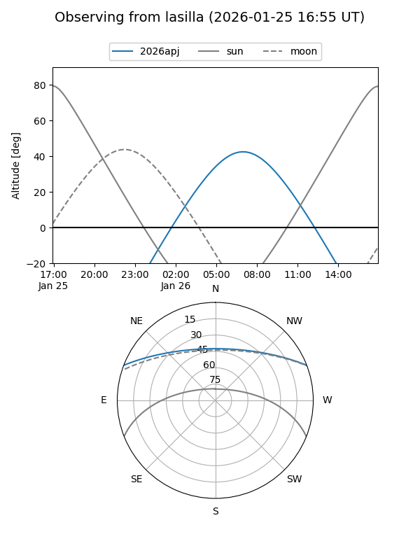
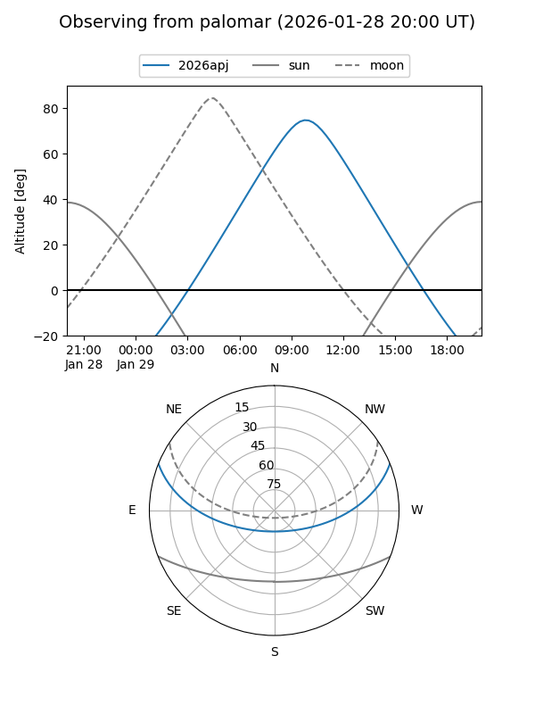
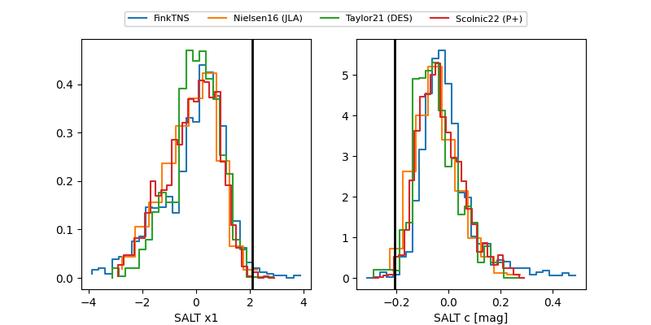

2026apj
Target 2026apj at 2026-01-25 18:16
Aliases and brokers:
FINK: link
Lasair: link
ALeRCE: link
TNS: link
YSE: link
alt names
ZTF26aacdcxx (ztf,fink_ztf)
2026apj (tns,yse)
PS26lp (panstarrs)
Coordinates:
equatorial (ra, dec) = 159.0464,+18.34898
equatorial (HMS+DMS) = 10:36:11.13,+18:20:56.32
galactic (l, b) = (221.4833,+57.71507)
Flags:
Photometry:
last ztfg=19.66, ztfr=19.65
2 ztfg, 3 ztfr detections
Lightcurve

Visibility


Additional plots
